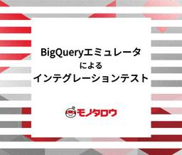

MonotaRO Tech Blog
https://tech-blog.monotaro.com/
MonotaRO Tech Blog
フィード

BigQueryエミュレータを使ったETLのインテグレーションテスト 24
24
MonotaRO Tech Blog
TL;DR BigQuery Emulator と fake-gcs-server を組み合わせることでbqコマンドでCSVファイルを読み込んでETLのインテグレーションテストができた。 はじめに こんにちは。先日こちらの記事を書いたCTO-Officeの藤本です。そこでは書ききれなかったETLについて書いておきたいと思います。 ビッグデータを扱うETLのテストを行いたい場合に、DBからExtractするEの部分など、ユニットテストやモックでは担保できないところが出てきます。 そのようなインテグレーションテストに、OSSのBigQuery Emulatorを活用できる場合があります。 背景 モ…
1日前

安定したElasticsearchバージョンアップを目指して
MonotaRO Tech Blog
(2024/12/10 13:35) Elastic Stack (Elasticsearch) Advent Calendar 2024のリンクを追加 初めまして。ECシステムエンジニアリング部門 EC商品基盤グループ サーチチーム 松浦です。 今回は、全文検索エンジンElasticsearch のバージョンアップの具体的な取り組みについて取り上げます。 このブログ記事の内容はElasticsearch株式会社が主催するElasticsearch Community in Osaka - connpassで発表した内容を元に作成しました。 また、Elastic Stack (Elastics…
10日前
EKSでKarpenterに入学してみた 〜 Fargateを卒業する理由と方法 〜
MonotaRO Tech Blog
はじめに こんにちは！コンテナ基盤グループの楠本です。 前回の記事EKSコンテナ移行のトラブル事例：FargateにおけるAZ間通信遅延の解消 - MonotaRO Tech Blogを投稿してから半年以上も経ちました。（時が流れるのは早い… 前回はSREグループコンテナ化推進チームとしてでしたが、今回は挨拶の通りコンテナ基盤グループとしての投稿です。 元々ECエンジニアリング部門のSREグループとして活動していましたが、今年初めに組織編成があり、プラットフォームエンジニアリング部門の１グループとして活動しています。 今回は組織とのミスマッチからEKS on FargateからEKS on E…
1ヶ月前
システムをVMからコンテナに移行して、結局VMに戻した話
MonotaRO Tech Blog
こんにちは、モノタロウ コアシステムエンジニアリング部門 配送ドメイングループの安見です。 この記事では私が関わっていた社内システムを仮想サーバ(AWS EC2)からコンテナに移行した後にコンテナをやめて仮想サーバに戻した話をご紹介します。 諸説明 コンテナ移行について コンテナ化対象システムについて 直面した様々な問題 リリース後の多数の残課題 展開する機能の数が多すぎる コンテナ化のメリットが薄かった なぜこうなったか よかったこと まとめ 追記： 現在なら... 諸説明 コンテナ移行について システムのコンテナ移行とは、アプリケーションやサービスを動作させるための必要なすべての環境を、一…
2ヶ月前
現場から学ぶMLOps: MonotaROでの実践的アプローチ～オンライン推論編～
MonotaRO Tech Blog
はじめに こんにちは。MonotaROで機械学習エンジニア兼、Tシャツのモデルを務めている新卒3年目の長澤です！ 最近は健康のためにスポーツをしているのですが、そのスポーツの疲れで日々が辛くなってきました。観戦と自分で身体を動かす方の割合(重み)をバンディットを使ってうまく最適化していきたいこの頃です。 今回は、自分がここ1,2年(2023~2024)で取り組んできたMonotaROにおけるMLOpsの取り組みについて、実例を交えながら紹介します。MLOpsの実例はあまり世の中に出回っていないので、一つの事例として読んでもらえれば嬉しいです。 はじめに この記事で紹介すること この記事で紹介し…
2ヶ月前
データと機械学習で顧客体験を革新する、次世代ECの舞台裏 - MonotaRO MLエンジニアリングチームの軌跡と展望
MonotaRO Tech Blog
MonotaRO(モノタロウ)では、全社的にデータ活用研修を行うなど、数字に基づいた意思決定を行うデータドリブンな経営が根付いています。事業者向けECサイトとして、モノを買う時にかかる手間や時間を短縮し、顧客である事業者の時間を創出することが、モノタロウの提供価値です。この価値をさらに高めるため、「ほしいものがすぐ見つかる」という顧客体験の向上に注力しています。 その中心的な役割を担うのが、機械学習（ML）を活用した顧客体験の最適化です。MLエンジニアリング（MLE）チームは、この重要なテーマの最前線に立ち、日々革新的なソリューションの開発に取り組んでいます。 データサイエンスのアルゴリズムを…
3ヶ月前
EKSでKubernetes DaemonSetを用いたロギング：Fluent-bitの運用とトラブル事例
MonotaRO Tech Blog
モノタロウのプラットフォームエンジニアリング部門 コンテナ基盤グループの宋 明起です。 私たちは、アプリケーション開発者からコンテナシステムの認知負荷を取り除き、アプリ開発に専念できるコンテナ基盤の構築と基盤を改善し、開発者はより楽に、より安全にアプリケーションのデプロイと運用できるように支援しています。 背景 基本設計 方針 構成 サンプル モニタリング サンプル 障害 障害1. Memory overflowエラーが発生 障害2. 大量のログが欠損になっている (refresh_interval) 障害3. まだ一部ログが欠損になっている (Prestop) [FAQ] 背景 モノタロウで…
3ヶ月前
モデリングとアーキテクチャの知見を積み上げて基幹システムに可変性を注入する
MonotaRO Tech Blog
こんにちは。 この記事では、2024/5/22に開催された「アーキテクチャを突き詰める Online Conference」で弊社CTOの普川がお話しした内容（ビジネスの構造をアーキテクチャに落とし込みソフトウェアに可変性を注入する〜モノタロウ基幹システム刷新の実践例）を、現場目線から改めてご紹介します。 なお、本稿の執筆は頼と尾髙が分担しておりまして、途中で急に文体が変わったな？と違和感を持たれることもあろうかと思われますが、ご容赦いただけますと幸いです。 本稿をさらに深掘りするイベントを10/4(金)に開催いたします。 ご興味ある方はぜひご登録ください。 https://connpass.…
3ヶ月前
成功を呼ぶ『騒ぐ』力！新米PMが挑んだインボイス制度対応プロジェクト
MonotaRO Tech Blog
いきなりですが、皆さんは「どうしたらプロジェクトマネージャになれるの？」と思ったことは無いでしょうか。 こんにちは。モノタロウの川北です。 今回はプロジェクトマネジメントの技術や方法論ではなく、プロジェクトマネージャを担える人材になる為に私が重要だと考える「心構え」と「ふるまい」についてお話したいと思います。 １．はじめに 1.1.プロジェクトマネージャへの第一歩 1.2.担当プロジェクトの概要 ２．プロジェクト推進の中で直面した壁 2.1.その役割、担ったことないんですけど...の壁 2.2.その領域、無知なんですけど...の壁 2.3.高品質な上に納期厳守って、ハードル高いんですけど...…
3ヶ月前
ドキュメンテーションを文化にする〜コミュニケーションの「ハブ」作りに取り組んだ4年間～
MonotaRO Tech Blog
はじめに こんにちは。プラットフォームエンジニアリング部門の池田（@progrhyme）です。 この記事では、モノタロウのテック系の部門で筆者が取り組んできた「ドキュメンテーションプロジェクト」について、下の目次の流れに沿って紹介していきます。 【目次】 はじめに 「ドキュメンテーションプロジェクト」とは プロジェクト発足の背景 ねらい（まとめ） 何をやったか ドキュメンテーションの促進 Confluence → Googleドキュメントへの移行 その結果どうだったか 上手く行ったこと 上手く行かなかったこと まとめ 「ドキュメンテーションプロジェクト」とは 初めに、プロジェクトの概要について…
5ヶ月前
出荷目安アイコンを改善するのに9か月もかかって辛かったので、システム分割を爆速で進めてリードタイムが9分の1になった話
MonotaRO Tech Blog
こんにちは。2019年に初々しい記事を書いていた山本です。今でも元気にモノタロウで働いております。 この記事では、社内カンファレンスで私が業務部門向けに行ったプレゼンテーションを基に、マイクロサービス化に踏み切ったエピソードを紹介します。モノタロウがGoとprotobufで進める爆速マイクロサービス開発とそれを支えるプロセス と被る部分もありますが、同じ内容でも今回は易しめに解説していますので、空き時間にでもさらっとお読みください。 -- --まさか共通化されてないなんて 2022年の暮れに、こんな改修依頼を受けました。私はプロジェクトの開発リード担当でした。 出荷目安アイコンとは、当社商品が…
5ヶ月前
社内の基盤を活かして爆速開発を実現するために重視したマイクロサービステンプレートの5つの要点
MonotaRO Tech Blog
はじめに 転職後の二つの喪失感への対応 所属チームの現状とMonotaROのアプリケーション/サービス共通基盤（所謂プラットフォーム） 所属チームの状況 社内プラットフォームの状況 マイクロサービス開発のためのテンプレートの導入 開発のロケットスタート：テンプレートの早期提供 テンプレート作成の5つの要点 1. ベンダー非依存なObservabilityの実装 2. CI/CDを早期に提供（特にLinterを最初期に） 3. APIプロトコルとして、JSON over HTTPとgRPCの双方をサポート 4. 最低限の薄いフレームワーク 5. セントラルProtobufリポジトリの提供 現在の…
6ヶ月前
イケてるダッシュボードを作りたい！アナリストが自分自身の仕事を分析してみた
MonotaRO Tech Blog
こんにちは！MonotaROで3年ほどアナリストをしている杉田です。1年前にマーケティング部門マーケティングサイエンスグループに異動し、現在はマーケティング施策の効果検証手法や売上予測手法の改善に取り組んでいます。データサイエンス領域でのスキルアップを目指しており、アナリストとデータサイエンティストの間という（MonotaROの中では）少数派な道を歩もうとしている最中です。キャリア面での葛藤話もまたの機会にお話しできたらと思っていますが、若手メンバーのオンボーディングについて部署の皆さんと執筆をした記事がありますので興味があれば覗いてみてください。 note.com 今回は、アナリスト業務をす…
6ヶ月前
マイクロサービス化するならリビルドで！ビジネスロジックをGoで書き直してわかったこと
MonotaRO Tech Blog
この記事では モノタロウがGoとprotobufで進める爆速マイクロサービス開発とそれを支えるプロセス - MonotaRO Tech Blog のうち、主にアーキテクチャにおける詳細について紹介します。 自己紹介 マイクロサービス化について 課題を認識する スコープと技術選定 ゴールイメージを共有する 既存コードから分かった問題点 曖昧なデータ構造 処理フローの混在 アドホックなデータ取得 効果的な改善を行う 処理フローを分割する N+1問題とロジックの独立性を考慮した設計 安全に移行する 実行時のデータを取る 新旧比較による検証 まとめ 自己紹介 藤本 洋一 プラットフォームエンジニアリン…
7ヶ月前
基幹システム運用安定化のアプローチ戦略~困難から見つけた解決の糸口~
MonotaRO Tech Blog
こんにちは。コアシステムエンジニアリング部門 商品ドメイングループの流川です。当グループでは商品情報管理基盤の開発・運用を担当しています。 突然ですが、システム刷新後にトラブルが頻発し、頭を抱えたことはありませんか？ 慣れ親しんだシステムをいつまでも使い続けたいですよね。社会背景や事業成長と共にシステム刷新を行わなければならない時は必ず来てしまいます。刷新に関わることも大変ですが、本当に大変だったのは運用後だったことを痛感しました。刷新を行うと運用方法も同時に変わってしまい、トラブルが起きがちです。今回は商品点数約2200万点を支えるモノタロウの商品情報管理基盤を刷新した際の経験をもとに、どう…
7ヶ月前
効率的にリファクタリングを進めるための下準備教えます
MonotaRO Tech Blog
はじめに ※ (2024/03/14 16:33) 「インテグレーションテストの気軽な実行・変更ができない」節にて、データのクリーンアップを teardownで行うよう修正 EC開発-B グループの岡崎と EC開発-A グループの菊川です。2人とも普段は MonotaRO の EC サイトの開発に従事しています。 今回は、昨年11月に開催した、テストとリファクタリングのためのワークショップの中で行ったライブコーディングの準備をするにあたって困ったことについて記載します。 ライブコーディングでは、参加者全員の前で実際のプロダクトのソースコードをリファクタリングする、ということにし、それにあたって…
9ヶ月前
モノタロウがGoとprotobufで進める爆速マイクロサービス開発とそれを支えるプロセス
MonotaRO Tech Blog
こんにちは。モノタロウのTechBlog編集チームです。 モノタロウではECサイトでのお客様体験の向上を目指して、日々改善に取り組んでいます。 商品の出荷目安などの出荷関連情報は重要な要素の1つになります。 今回は、出荷関連情報の正確性を改善するとともにシステムの変更容易性を向上させるためにマイクロサービス化に取り組んだ活動をインタビューしました。 自己紹介 納期表示を高度化する サプライヤ在庫連携機能開発のつらみ AVLのマイクロサービス開発のすすめ方 リリース・監視・その後の展開 おわりに 今回インタビューしたみなさん 自己紹介 山崎 章裕 ECシステムエンジニアリング部門 開発生産性グル…
10ヶ月前
モノリシックなAPIでのカナリアリリース導入と開発者の認知負荷を減らすためConfigMapを使わない選択をした話
MonotaRO Tech Blog
こんにちは、プラットフォームエンジニアリング部門コンテナ基盤グループの岡田です。 当社ではECサイトの裏側で利用されているモノリシックなAPIをコンテナ化し、Elastic Kubernetes Service (EKS) に移行しました。 移行直後は下記のようにトラブルに見舞われましたが、現状安定した運用ができています。 EKSコンテナ移行のトラブル事例：推測するな計測せよ -CoreDNS暴走編- - MonotaRO Tech Blog EKSコンテナ移行のトラブル事例：FargateにおけるAZ間通信遅延の解消 - MonotaRO Tech Blog 今回はトラブル事例ではなく活用事…
10ヶ月前
まずはドメインごとにデプロイ可能とする ～ドメイン間の依存が複雑なモノリスのモダナイズに向けて～
MonotaRO Tech Blog
こんにちは。コアシステムエンジニアリング部門で受注システムの開発を担当している中尾です。 今回はモノタロウの基幹システムのモダナイゼーションの取り組みについて紹介します。 モノタロウ社内の基幹システムにはいくつか存在しておりますが、中でも古くに作られた大規模なシステムについて、機能や開発に関係するグループが多く、保守コストが増大している状況にあります。 そこで、この度、業務ドメイン毎に開発・保守できるような体制の構築とシステムの分割を実施しましたので、その取り組み内容を紹介いたします。 背景 現在、MonotaROではお客様向けのWebサイト以外に、間接業務で利用するシステムやサイトに掲載する…
10ヶ月前
「全ては会社の競争力を生み出すために」アーキテクチャを刷新し、ドメインモデリングも組織再編もエンジニア教育も一つ一つ丁寧に積み上げてモダナイズを進めた話｜CTOロングインタビュー
MonotaRO Tech Blog
独自のビジネスモデルを持ち、競争優位を獲得しているモノタロウ。事業拡大に合わせて、モノタロウの成長をテクノロジーで支えるTech組織も進化してきました。現在Tech組織は、より高度なビジネス価値を生み出せるようにするため、サプライチェーンの高度化、パーソナライゼーションでの商品検索に着目し、アーキテクチャの再構築とシステムのモダナイズに取り組んでいます。また、そこに向けて組織体制のアップデートやカルチャーの醸成にも力を入れています。 今回は、MonotaRO CTO 普川泰如氏のインタビューから、その実態に迫っていきます。まず第1章ではモノタロウが会社として掲げるビジョンとビジネスの特徴につい…
1年前
スライド1枚で参加OK！ LT会の面白いやり方と内容を公開します！（本番環境でやらかしちゃった選手権、この技術書がすごい！）
MonotaRO Tech Blog
はじめに こんにちは、SREグループ 新卒2年目の佐藤です。 私が所属するSREグループでは毎週LT会が開催されています。 先日のLT会ではいつもと違う工夫がされていて、参加・発表のしやすさがグッと上がり、楽しく学びのあるLT会になりました。 そのLT会でされていた工夫は面白く再現もしやすいので、本記事でみなさんに共有します。さらに、実際のLT会の資料も公開します。MonotaRO（の1グループ）ではどのようなLT会が行われているかの雰囲気も知っていただければ幸いです。 はじめに スライド1枚で参加OKなLT会 どんな良いことが起こったか スライド大公開！ 本番環境でやらかしちゃった選手権 こ…
1年前
「数字を出す」だけではない ～サプライチェーン領域の新卒データアナリストがMonotaROで学んだこと～
MonotaRO Tech Blog
自己紹介 こんにちは。MonotaROの新卒2年目の辻です。サプライチェーン・マネジメント部門でデータアナリストとして働いています。 この記事では新卒社員の目線で新人データアナリストとしてMonotaROで経験していること、その中で感じていることをお話したいと思います。 自己紹介 MonotaRO入社の経緯 サプライチェーン・マネジメントとは？ データアナリストとして入社して感じたこと・気づいたこと SCMデータアナリストの業務 業務を通して感じたこと 数字を解釈して示唆を出す 関係者とコミュニケーションを取り続ける まとめ MonotaRO入社の経緯 もともと大学では統計学やデータ分析の手法…
1年前
リファクタリングを文化にする 〜組織が技術的負債と向き合うワークショップ〜
MonotaRO Tech Blog
皆さんこんにちは。 CTO-Office の香川とEC開発-Bグループの竹原です。 11/28に 和田卓人氏(id:t-wada)を講師としてお招きしてテストとリファクタリングのためのワークショップを開催いたしました。 技術者正社員のうちプログラミングをすることの多いメンバー全体の約1/3にあたる総勢53名が参加しての開催となりました。 本記事ではまず第一弾としてワークショップの概要や目的、全体の流れについて簡単にご紹介いたします。 また第二弾(2024年1月公開予定)では、運営とワークショップの問題の作問に関わったメンバーにそこでの学びや実践について紹介いただきます。 開催に至った経緯とMo…
1年前
EKSコンテナ移行のトラブル事例：FargateにおけるAZ間通信遅延の解消
MonotaRO Tech Blog
こんにちは！SREグループ コンテナ化推進チームの楠本です。 EKSへのコンテナ移行では、これまで紹介した記事以外にも様々なトラブルがありました。 EKSコンテナ移行のトラブル事例：ALBの設定とPodのライフサイクル管理 - MonotaRO Tech Blog EKSコンテナ移行のトラブル事例：推測するな計測せよ -CoreDNS暴走編- - MonotaRO Tech Blog 今回のトラブルでは、コンテナ移行に伴ってSLOが未達状態になりエラーバジェットを急激に消費してしまいました。 その対策としてマルチAZ間の通信遅延の解消をEKS on Fargateで実施したお話をご紹介します。…
1年前
チームにポジティブなコミュニケーションを増やす スキルマップの使い方
MonotaRO Tech Blog
この記事では、チームにポジティブなコミュニケーションを増やすために、メンバー同士の自己開示のためのツールとしてスキルマップを利用したこと、利用にあたって工夫したことについてお話していきます。
1年前
リファクタリングをする際にソースコードの設計からはじめてはいけない
MonotaRO Tech Blog
どうも、レコメンド商品のシステム開発をしている野川と申します。 私は、2021年にモノタロウに新卒入社し、2022年5月からレコメンド商品の開発に関わり始めました。 モノタロウのレコメンド商品は、下の図の①～④の流れでクライアントサイドで表示しています。大部分の処理はJavaScriptで構成しており、UIもそのHTML部分をjQuery(JavaScript)で作成しています。 図：レコメンド商品表の流れ 入社当時私は、ソフトウェアエンジニアとして、「可読性の低いコードは駆逐するべきだ」「読みやすいコードだけが正義である」「理解しやすいシステムだけが皆を幸せにする」と心の底から考えていました…
1年前
社内ChatGPTを使ったGASアプリ開発の完全解説！業務改善の高速化を実現
MonotaRO Tech Blog
こんにちは。エンタープライズソリューショングループの石川です。大企業連携システムの基盤の開発や運用を担当していて、日々発生するエラーの監視や調査も行っています。今回は手間と時間がかかりがちだったエラー調査を、ChatGPTを使って改善した話をします。 エラー調査の背景 カタログサイトの概要とエラー発生時の影響 注文受付が影響を受ける理由とエラーの具体例 エラー発生時の調査手順 1. 注文受付へのリクエストがないか確認 2. 購買システムに注文情報を再送信する仕組みがあるか確認 3. 再送信の仕組みがない購買システムの場合は、社内の担当グループに対応依頼 MonoChatに聞きながらGASアプリ…
1年前
アップデートは計画的に | Jenkins運用未経験の二人チームがJenkinsを任せられるようになるまで
MonotaRO Tech Blog
こんにちは、MonotaROの伊藤です。 今回は私が所属しているチームでMonotaROのサイトのデプロイの大部分で使用されているJenkinsの運用を引き継いだ話をしたいと思います。 チームが結成されて最初の仕事として始めたこの引き継ぎでしたが、当初予定されていた二週間どころか完全な完了に四カ月かかってしまいました。 なぜ、このような事が起きてしまったのか振り返り、上手くいった事や上手くいかなかった事、どうすればもっとスムーズに進められたのか事などの内容について紹介できればと思います。 背景 終わらないアップデート 問題一: 本体のバージョンとプラグインの整合性が合わない 問題二: ジョブが…
1年前
複数プロジェクトのカニバリを避け成果を最大化するために “プログラムマネジメント” を導入した話
MonotaRO Tech Blog
こんにちは、モノタロウの EC サイト開発グループに所属している田上といいます。 モノタロウには 2019 年に中途で入社し、入社以来ずっとフロントエンドまわりのことに携わっています。最近は開発業務ではなくプロジェクトマネジメントなどのマネジメント業務をすることが多いです。 さて、どんな企業でも、新規事業の立ち上げや既存事業の改善など、複数のプロジェクトが並行で進むことはよくあることかと思います。 しかし、それらを推進していく中で、 A プロジェクトの成果として改善した ○○ の指標が、B プロジェクトの結果によって相殺されてしまった！ △ さんがいろんなプロジェクトで引っ張りだこになって、結…
1年前
あえて手動アップグレードを選ぶ〜マネージドサービス(GKE)で手作業による対応をした話〜
MonotaRO Tech Blog
こんにちは。データ基盤グループ データエンジニアリングチームの宮口です。 この記事ではGoogle Cloud Platform（以下、GCP）のサービスの1つであるGoogle Kubernetes Engine（以下、GKE）のクラスタを手動アップグレードした話を紹介します。 私が所属するデータエンジニアリングチームでは、社内システムに保存されたデータをGCPのBigQueryにニアリアルタイムで同期するシステムや、BigQueryに保存されている大容量のデータを低レイテンシなAPIとして提供するシステムなど、モノタロウのビジネスを裏側で支えるシステムの管理を行っています。それらのシステム…
1年前